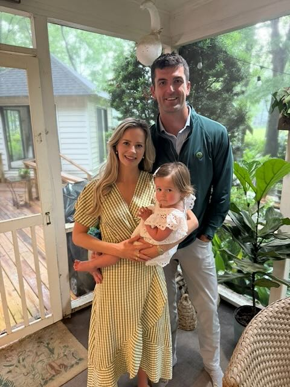
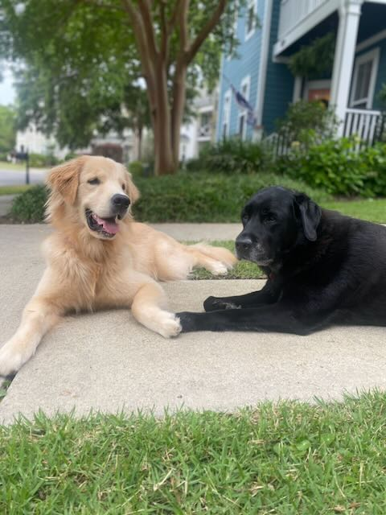

The longer version
I started my career at RKG — a boutique SEM firm in Charlottesville, Virginia — back when "data-driven marketing" was something people were figuring out in real time. I learned early that good marketing lives at the intersection of rigorous analysis and genuine human understanding. That combination became my thing.
From RKG I moved through a series of increasingly complex marketing challenges. At SnapCap, a fast-growing innovator in small business lending, I was the only marketer. I built systems from scratch supporting acquisition, retention, and analytics, and helped grow the business to acquisition by LendingTree in 2017. That experience gave me something I've leaned on ever since: confidence that you can build a lot with very little, if you're focused.
LendingTree was a different kind of education. I ran product marketing for a six-product consumer portfolio including credit cards, personal loans, and business lending — and in Q1 2020, COVID hit while I was in the middle of it. Category revenues fell 80–87% in a single quarter. No playbook. We replaced conventional planning cycles with a daily performance trading cadence, making real-time budget and channel decisions on evolving data. We protected unit economics. We kept partner relationships intact. It was the hardest professional period I've had, and the most instructive.
Later at LendingTree I moved into Marketing Operations, where I supported the the integration of 13 acquisitions into a unified MarTech and revenue stack. It was there that I became genuinely obsessed with the infrastructure underneath marketing — the data pipelines, the measurement architecture, the stack that either unlocks or limits what's possible.
That obsession followed me to TaxSlayer, where I now serve as CMO, leading a team of 23 across brand, creative, digital, lifecycle, and product marketing. I joined following the company's acquisition by Marlin Equity Partners. In my time with TaxSlayer, I have been focused on building the 'Marketing Machine' — transitioning the marketing function into a modern, data-driven enterprise built to scale.
Lately, I've been paying close attention to AI — what it can actually do for marketing, where it creates real leverage, and where the hype outruns the reality. I spend my free time researching, learning, and tinkering. What you are looking at is part of that process.
I live in Mt. Pleasant, SC with family, dogs (Bubba and Honey), and cat (Fern). We love Charleston and the Lowcountry... even with the no-see-ums and humidity. Our favorite thing is to spend our weekends by or on the water. We are 5 minutes from Sullivan's Island, are members of Freedom Boat Club, and have a community dock that we stroll down regularly.
My wife, Hannah, and daughter, Jane, are the center of my life. Becoming a father has sharpened my priorities; being a good husband and dad is my primary focus outside of work. Taking Jane to a local park to play with friends or on our special neighborhood nature trail walk is a key part of our daily routine.
Maintaining my health and being active is important to me. Most days start with some form of exercise and it helps ground me for the day to come. I lift weights and have a setup in the garage that I prefer to use. I do yoga a couple of times a week — it's one of those things I was skeptical of and now can't imagine not doing.


I believe staying sharp means staying curious. These are the people I return to consistently — for sharp analysis, honest takes, and thinking that actually changes how I see things.
My reading tends toward adventure, history, and big personalities. I'm drawn to stories of people operating under pressure — explorers, leaders, and the occasional con artist. If a book can make me feel like I'm there, I'm in. A few of my favorite titles from over the years are listed.